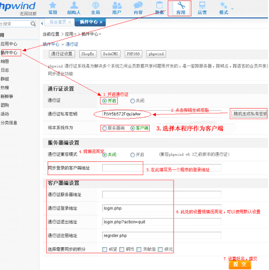
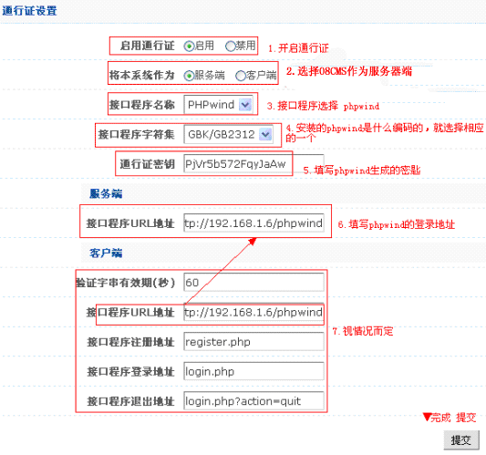

08CMS与phpwind会员整合实例教程
一、前言
会员整合实例教程，实现用户在各系统之间的一站式注册、登录、退出。
二、08CMS与phpwind会员整合
08CMS与phpwind会员整合有以下步骤：
第一步、安装08CMS和phpwind程序
第二步、进入phpwind的管理后台：应用->插件中心->通行证->设置

整合OK
第三步、进入08CMS的管理后台：系统设置→网站参数→通行证

整合OK
第四步、设置好之后，进入程序首页，开始登录测试。